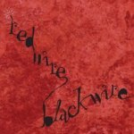

Music Reviews
-

Red Wire Black Wire Compass EP
Wesleyan University favourite releases its debut EP.
Jeff Rovinelli reviews... -
Lightspeed Champion Falling Off The Lavender Bridge
Former Test Icicles man goes alt-country. Well, kind of.
Iain Moffat explains... -
Magnetic Fields Distortion
Stephin Merritt dishes out some Pyschocandy of his own.
Alan Shulman reviews... -
Charlottefield What Are Friends For
Charlottefield release a new album on Fat Cat.
Simon Briercliffe ponders... -
Flight of the Conchords Distant Future
For anyone not familiar with "New Zealand's 4th most popular musical parody duo" from their stand up or HBO show, it's time to get acquainted.
Alan Shulman reviews... -
British Sea Power Do You Like Rock Music?
British Sea Power's third album is a bold leap forward for one of Britain's best bands of the decade.
D.C. Harrison reviews (and earns extra credit by being the first not to close with a pun based on the album title)... -
The Whitest Boy Alive Dreams
Oye! Oye! Hear ye, good people... A King Of Convenience has a brand new album in tow.
Iain Moffat determines just how sweet 'Dreams' is... -
Psapp Tiger, My Friend
Ever wondered just how Psapp earned their stripes in the first place?
Iain Moffat gets his claws into a reissued 'Tiger, My Friend'... -
Various Artists Daptone Records Remixed (Scion CD Sampler Volume 19)
Toyota's car for cool urban Toyota drivers released a fine collection showcasing the classic soul stylings of Daptone Records.
George Booker reviews... -
Mike Ladd Nostalgialator
George Booker completes his daylong mini marathon of Mikes with Def Jux's release of genius bon vivant Ladd's 2004 European release just now finding a North American ear.
George Booker digs...